groesse_cm
1 147.0
2 146.3
3 130.4
4 144.6
5 134.0
6 138.0
7 141.8
8 154.4
9 141.1
10 138.7
11 126.8
12 136.0
13 140.5
14 137.4
15 125.0
16 140.9
17 148.0
18 154.3
19 120.4
20 115.3
21 137.8
22 140.5
23 132.2
24 152.7
25 137.9
26 147.1
27 126.3
28 144.3
29 136.0
30 137.9
31 145.3
32 137.6
33 134.9
34 139.1
35 133.0
36 137.3
37 135.0
38 144.7
39 132.0
40 139.9
41 151.9
42 132.4
43 140.9
44 142.0
45 131.0
46 136.7
47 130.0
48 146.0
49 132.4
50 124.9
51 147.8
52 123.1
53 133.2
54 143.6
55 139.1
56 129.3
57 137.7
58 166.9
59 137.6
60 134.0
61 149.3
62 128.4
63 148.5
64 136.9
65 141.8
66 145.7
67 140.8
68 141.6
69 137.3
70 155.6
71 131.3
72 139.6
73 150.4
74 136.1
75 125.6
76 137.3
77 135.2
78 134.1
79 150.2
80 143.6
81 111.4
82 145.1
83 142.7
84 142.4
85 140.4
86 135.6
87 145.4
88 147.2
89 147.9
90 148.5
91 146.9
92 127.6
93 134.9
94 150.6
95 128.5
96 132.0
97 131.2
98 140.0
99 137.8
100 135.2WS26/27 AM1: Quantitative Linguistik: Eine Einführung in die Statistik
Sitzung 3: Deskriptive Statistik I
Eva Scheel
eva.scheel-huber@uni-koeln.de
04. 11. 2026
Übersicht
- Aufgabenblatt 1
- Deskriptive Statistik I
Schwerpunkt heute: Maße der zentralen Tendenz (Mittelwerte) und Maße von Streuung
Deskriptive Statistik
Beschreiben einer Stichprobe
Wieso?
- Muster erkennen
- einen Eindruck von den Daten bekommen
- Daten darstellen und kommunizieren
- möglicherweise auch Fehler oder Auffälligkeiten finden
Wie?
- Charakteristika von Verteilungen
- Visualisierungen
Deskriptive und Inferentielle Statistik
Deskriptive Statistik: Beschreiben einer Stichprobe
Inferentielle Statistik: Erlaubt es anhand einer Stichprobe Aussagen über eine Population zu machen
Deskriptive und Inferentielle Statistik
Deskriptive Statistik: Beschreiben einer Stichprobe
Inferentielle Statistik: Erlaubt es anhand einer Stichprobe Aussagen über eine Population zu machen
In Wirklichkeit ist die Grenze aber unscharf…
Deskriptive Statistik
- Wahrscheinlichkeitsverteilungen und Charakteristika deren:
- Maße der zentralen Tendenz (= Lagemaße)
- Streuungsmaße (= Dispersionsmaße)
Maße der zentralen Tendenz
Beispiel: Größen von Schüler:innen in einer Grundschule
[1] "Anzahl Schüler:innen: 100"[1] "Höchstwert: 111.4"[1] "Tiefstwert: 166.9"Maße der zentralen Tendenz
Beispiel: Größen von Schüler:innen in einer 3. Klasse
Durchschnitt (arithmetisches Mittel, Mittelwert)
Bezeichnung: \(M=`m`\) oder \(\bar{x}\)
Maße der zentralen Tendenz
Beispiel: Größen von Schüler:innen in einer 3. Klasse
Durchschnitt (arithmetisches Mittel, Mittelwert)
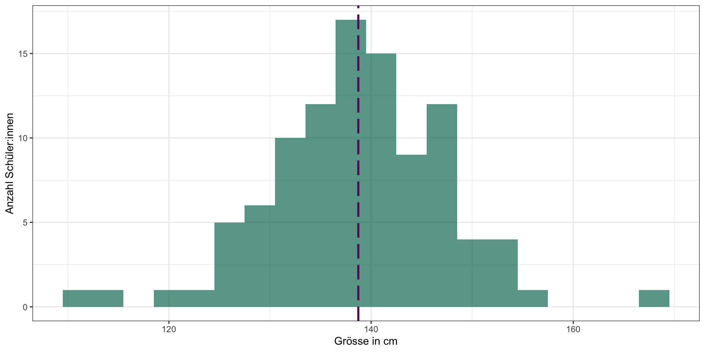
Maße der zentralen Tendenz
Beispiel: Größen von Schüler:innen in einer 3. Klasse
Median
- “mittlere Punkt” der Daten: 50% der Daten sind unter dem Median, 50% über dem Median
[1] 100 [1] 111.4 115.3 120.4 123.1 124.9 125.0 125.6 126.3 126.8 127.6 128.4 128.5
[13] 129.3 130.0 130.4 131.0 131.2 131.3 132.0 132.0 132.2 132.4 132.4 133.0
[25] 133.2 134.0 134.0 134.1 134.9 134.9 135.0 135.2 135.2 135.6 136.0 136.0
[37] 136.1 136.7 136.9 137.3 137.3 137.3 137.4 137.6 137.6 137.7 137.8 137.8
[49] 137.9 137.9 138.0 138.7 139.1 139.1 139.6 139.9 140.0 140.4 140.5 140.5
[61] 140.8 140.9 140.9 141.1 141.6 141.8 141.8 142.0 142.4 142.7 143.6 143.6
[73] 144.3 144.6 144.7 145.1 145.3 145.4 145.7 146.0 146.3 146.9 147.0 147.1
[85] 147.2 147.8 147.9 148.0 148.5 148.5 149.3 150.2 150.4 150.6 151.9 152.7
[97] 154.3 154.4 155.6 166.9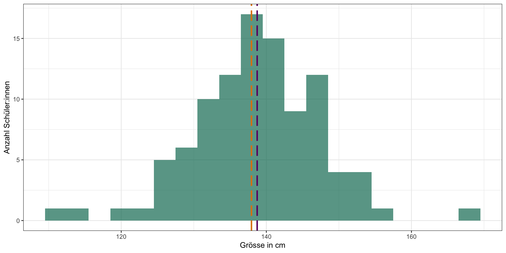
Maße der zentralen Tendenz
Welcher Vorteil hat der Median im Vergleich zu dem arithmetischen Mittel?
Maße der zentralen Tendenz
Beispiel: Einkommen
Bruttomonatsverdienste in Deutschland
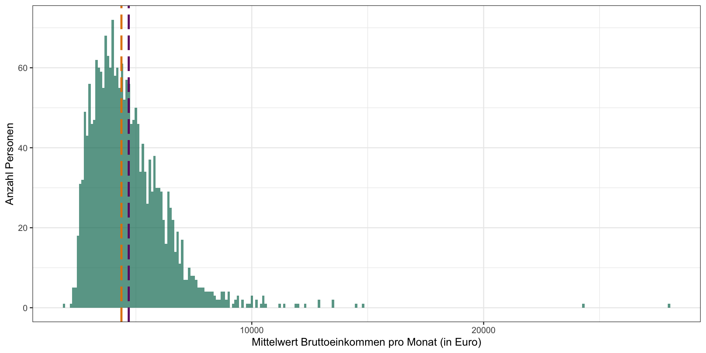
April 2025, 62361-0030, vom Statistischen Bundesamt (abrufbar hier)
Kategorische Variablen
Lieblingsfächer und Hobbys von Schüler:innen*
Anzahl Schüler:innen pro Lieblingsfach:
Biologie Chemie Deutsch Englisch Französisch Mathematik
19 19 21 17 17 16
Musik Physik Sport
12 16 13 Anzahl Schüler:innen pro Hobby:
Backgammon Hula_Hoop Kanufahren Modelleisenbahn Posaune
36 19 24 18 23
Seilspringen
30 *Erfundener Datensatz!
Kategorische Variablen
Lieblingsfächer von Schüler:innen
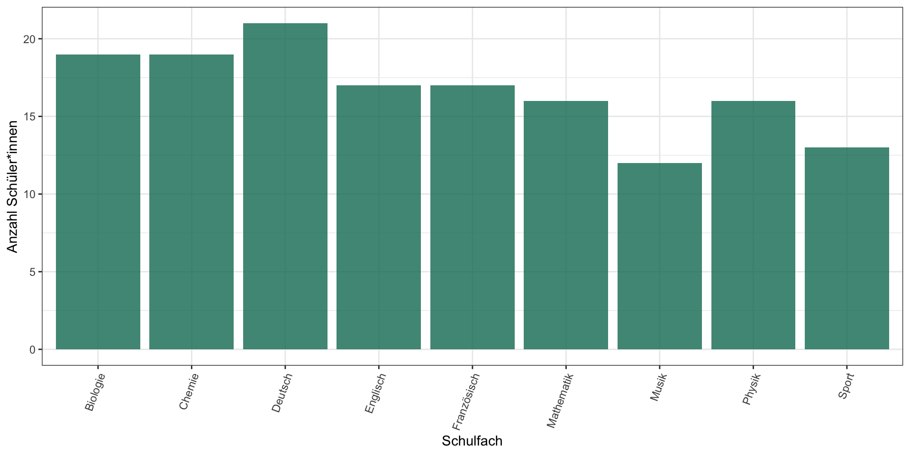
Kategorische Variablen
Lieblingsfächer von Schüler:innen
Kombination von Lieblingsfach und Hobby (Kreuztabelle, Kontingenztabelle)
Biologie Chemie Deutsch Englisch Französisch Mathematik Musik
Backgammon 3 5 9 5 3 4 3
Hula_Hoop 4 1 2 1 3 3 0
Kanufahren 3 2 4 3 2 2 0
Modelleisenbahn 6 3 1 2 4 0 1
Posaune 1 4 3 2 3 2 3
Seilspringen 2 4 2 4 2 5 5
Physik Sport
Backgammon 2 2
Hula_Hoop 4 1
Kanufahren 5 3
Modelleisenbahn 1 0
Posaune 2 3
Seilspringen 2 4Kategorische Variablen
Lieblingsfächer von Schüler:innen
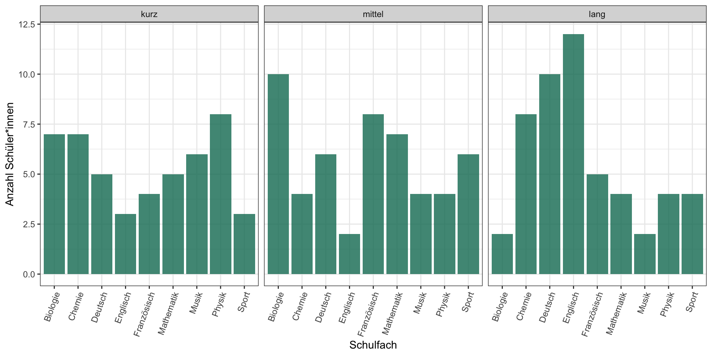
Es gibt auch noch ganz viele andere Visualisierungsmöglichkeiten (z.B. Mosaikplot).
Kategorische Variablen
Maß der Zentralen Tendenz
Können wir das arithmetische Mittel oder den Median von kategorischen Variablen berechnen?
Kategorische Variablen
Maß der Zentralen Tendenz: Modus
Der Wert, der in einer Stichprobe am häufigsten vorkommt.

Kategorische Variablen
Maß der Zentralen Tendenz: Modus
Der Wert, der in einer Stichprobe am häufigsten vorkommt.
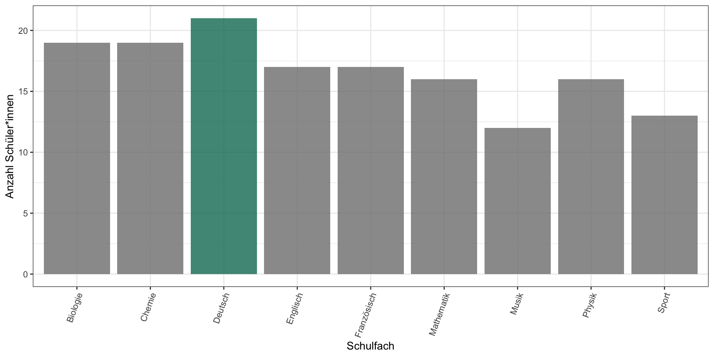
Können wir auch den Modus von numerischen Variablen berechnen?
Verteilungen
- empirisch beobachtete Verteilung: beschreibt unsere Stichprobe
- theoretische Verteilung (normalerweise Wahrscheinlichkeitsverteilungen): theoretische Verteilung von der eine Stichprobe generiert wurde (mehr nächstes Mal)
- Wahrscheinlichkeitsverteilung: Funktion, welche Ereignissen ihre Wahrscheinlichkeiten zuordnet
z.B. Normalverteilung (oder Gauß-Verteilung)
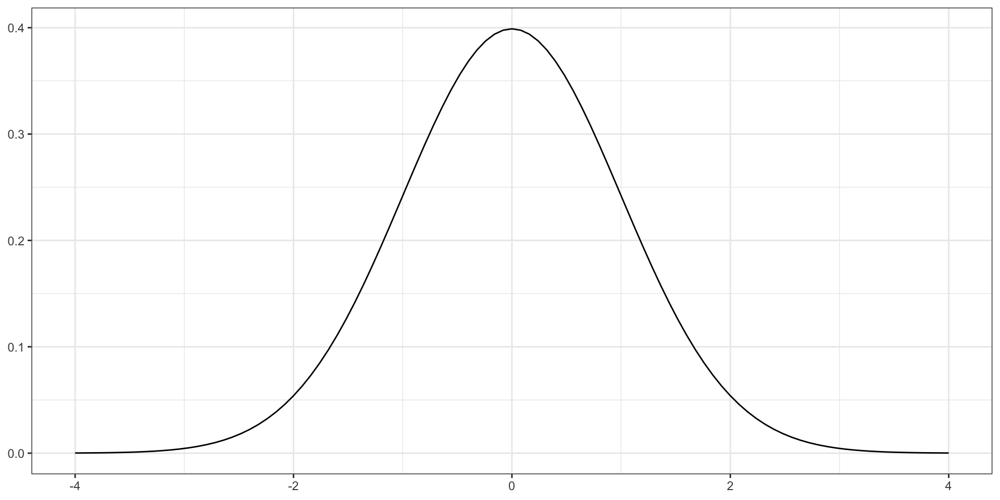
Empirisch beobachtete Verteilung
Beispiel: Größen von Schüler:innen in einer 3. Klasse
Häufigkeitsverteilung
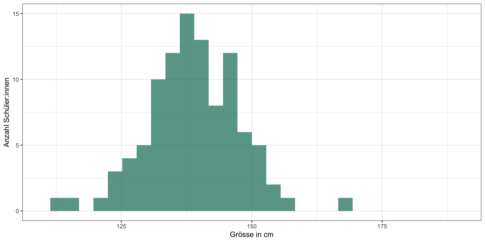
Wahrscheinlichkeitsverteilung (Verteilungsdichte)
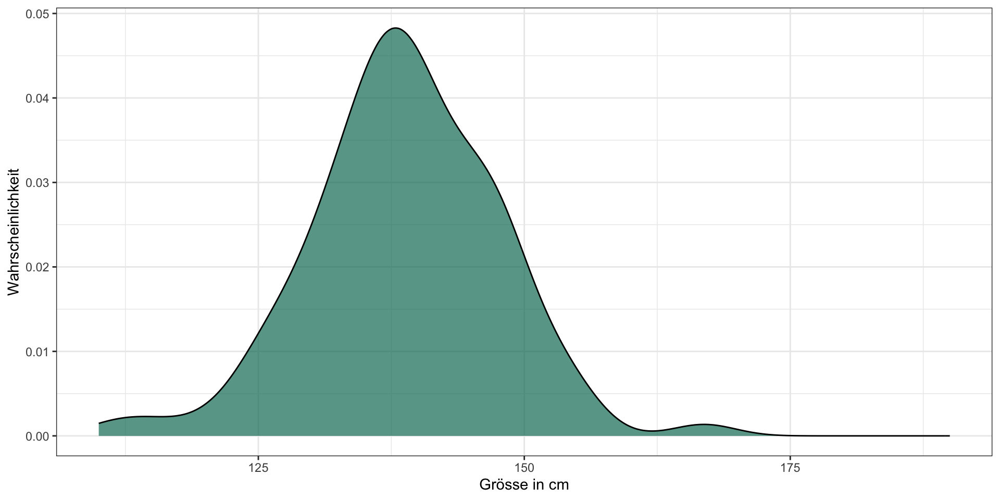
Sind die Daten normal verteilt?
- Sie sollten ja, denn die Daten wurden aus einer Normalverteilung erzeugt.
Empirisch beobachtete Verteilung
Beispiel: Größen von Schüler:innen in einer 3. Klasse
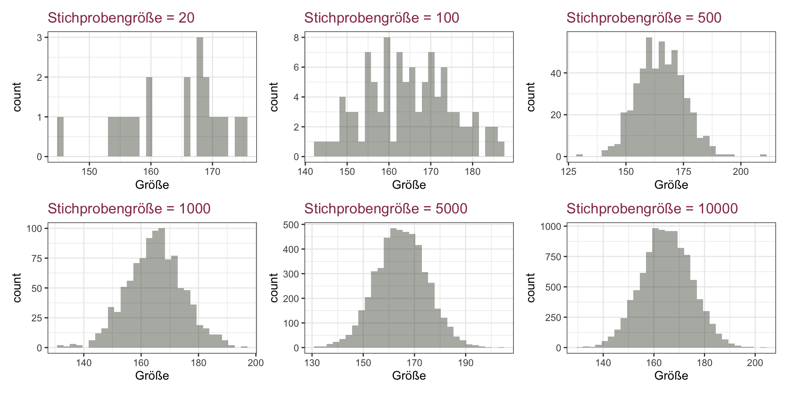
Je größer unsere Stichprobe, desto mehr nähert sich die beobachtete Verteilung der unterliegenden Verteilung an, die die Daten generiert hat.
Empirisch beobachtete Verteilung
Beispiel: Größen von Schüler:innen in einer Klasse
Wahrscheinlichkeitsverteilung (Stichprobengröße=10000)
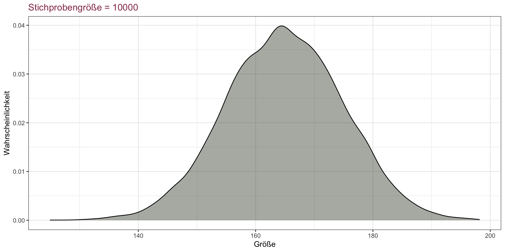
- Normalerweise sind unsere Stichproben kleiner
- Deshalb nehmen wir an, dass unsere Daten von einer Verteilung generiert worden sind, die einer theoretischen Verteilung entsprechen (z.B. Normalverteilung).
- Wichtig für statistische Modelle später im Kurs
Streuungsmaße (Dispersion)
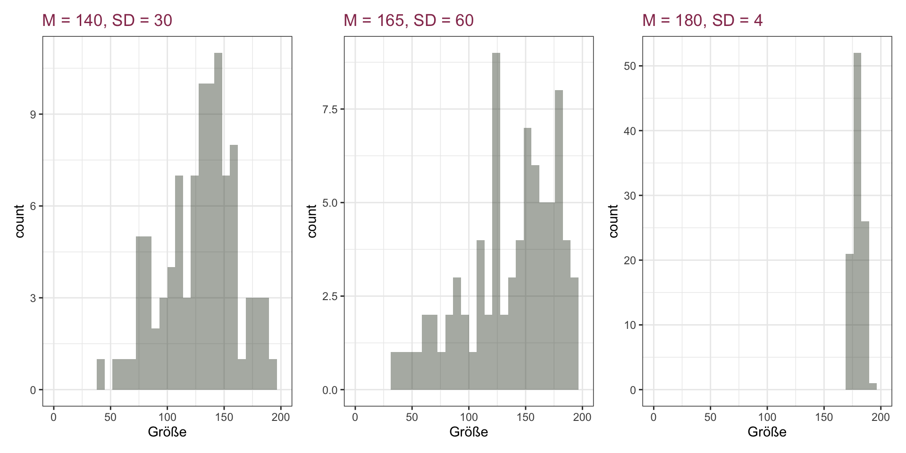
Wie unterscheiden sich diese Verteilungen?
- unterschiedliche Mittelwerte
- unterschiedliche Streuung
Streuungsmaße, Varianz, Dispersion
Standardabweichung
Zeigt uns:
- “die durchschnittliche Abweichung von dem Mittelwert”
- wie homogen unsere Stichprobe ist
\[ SD = \sqrt{\frac{\sum (x-\bar{x})^2}{n-1}} \] \(x\) ist ein einzelner Datenpunkt, \(\bar{x}\) ist der Mittelwert, \(n\) ist die Stichprobengröße
Was bedeutet diese Formel?
Streuungsmaße, Varianz, Dispersion
Berechnung der Standardabweichung
\[ SD = \sqrt{\frac{\sum (x-\bar{x})^2}{n-1}} \]
Beispiel: Körpergrößen von acht Personen: 175, 156, 165, 160, 180, 164, 170, 177
Berechnen des Mittelwertes: \[ \bar{x} = \frac{175 + 156 + 165 + 160 + 180 + 164 + 170+ 177}{8} = \frac{1347}{8} = 168.375 \]
Berechnen der quadratischen Abweichung vom Mittelwert für jeden Datenpunkt \(x\), z.B. für \(x_{1}\): \((175-168.375)^2 = 43.891\)
Summieren der Werte aus 2.: \(\sum (x-\bar{x})^2 = 509.875\)
\(\frac{\sum (x-\bar{x})^2}{n-1} = \frac{509.875}{7} = 72.839\) (Varianz)
\(SD = \sqrt{72.839} = 8.534594\) (Standardabweichung)
Streuungsmaße, Varianz, Dispersion
Berechnung der Varianz und Standardabweichung mit R.
Normalverteilung
Die Normalverteilung (als “theoretische Verteilung”) ist definiert durch den Erwartungswert \(\mu\) (“mu”) und die Standardabweichung \(\sigma\). (“sigma”)
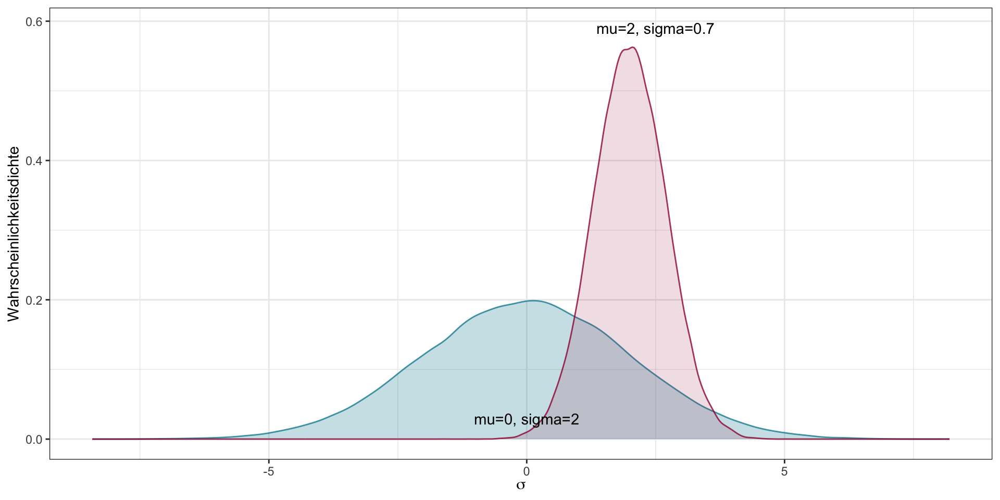
Normalverteilung
- \(\mu\) und \(\sigma\) sind Parameter (in diesem Kontext: ~Eigenschaften einer Verteilung)
- Wir benutzen Stichproben um diese Parameter zu schätzen
- mit \(\bar{x}\) schätzen wir den Erwartungswert \(\mu\) und mit \(SD\) die Standardabweichung \(\sigma\).
- Mit statistischen Methoden können wir die Unsicherheit dieser Annäherungswerten quantifizieren.
mehr nächstes Mal
Boxplots und Interquartilsabstand
- ein weiterer Weg die zentralen Tendenzen und Streuung der Daten zu illustrieren
- wie breit das Intervall ist, in dem die mittleren 50% der Datenpunkte aus der Stichprobe liegen
- basierend auf den empirischen Daten
Interquartilsabstand
Median: 50% der Datenpunkte liegen links vom Median, 50% rechts
- Für den Interquartilsabstand teilen wir die Daten weiter auf:
- Erstes Quartil (Q1): unterste 25%
- Zweites Quartil (Q2): 25-50%
- Drittes Quartil (Q3): 50-75%
- Viertes Quartil (Q4): oberste 25%
- Interquartilsabstand: Bereich zwischen dem zweiten und dem dritten Quartil -> mittleren 50% der Daten
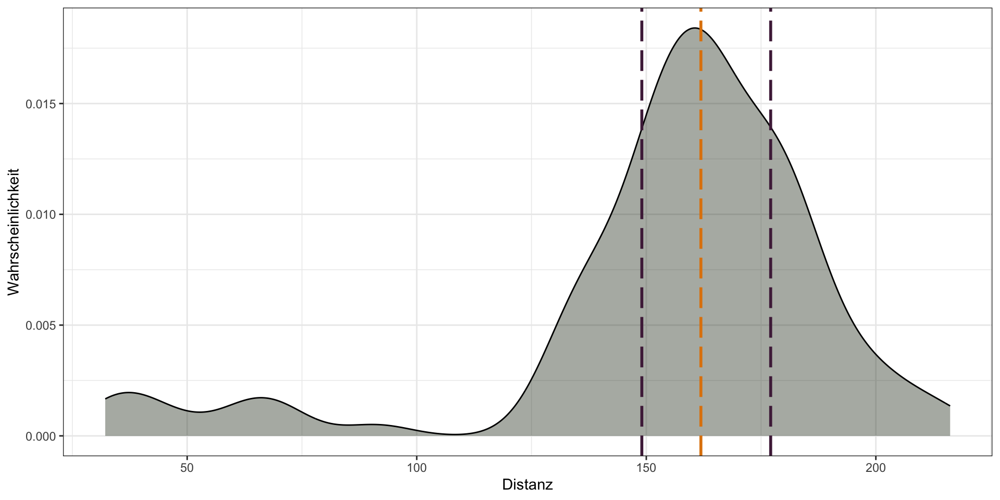
[1] 28.06136Boxplot: Visualisierung des Interquartilsabstand
- Box: Interquartilsabstand
- dicke Linie: Median
- “Whiskers”: ungefähr untere 25% und obere 25% der Daten
- Punkte: Ausreißer (“outliers”), extreme Datenpunkte
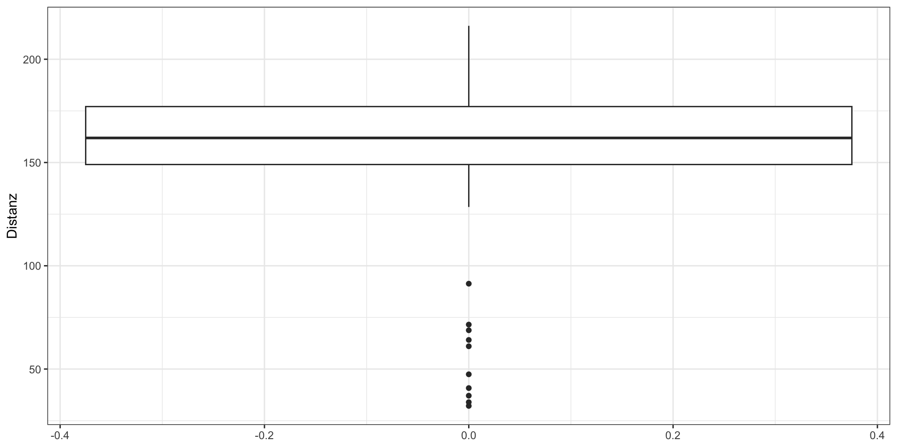
(“Whiskers”: Maximum von dem Q3 + 1.5*IQR und Minimum von dem Q1 + 1.5*1QR)
Nächstes Mal
- Online! Zoom-link folgt
- AB2
- mehr über die Normalverteilung und Wahrscheinlichkeitsverteilungen
- Ausreißer, Normalisierungsmaße
- Visualisierungen
Lernziele
- mit zentralen Maßen der Tendenz (arithmetisches Mittel, Median, Modus) vertraut sein, wissen wie sie sich in unterschiedlichen Verteilungen verhalten und für welche Daten welches Maß angebracht ist.
- mit Streuungsmaßen (insbesondere Standardabweichung und Interquartilsabstand) vertraut sein, sie interpretieren und berechnen zu können.
- den Unterschied zwischen theoretischen und empirisch beobachteten Verteilungen zu kennen